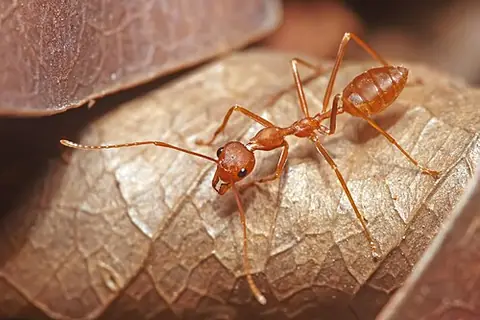

Chutneys, pickles & raitas · Popular in East and Central forests
Kai chutney
Kai chutney is made with wild red ant chutney, a favourite in East and Central forests.

How do you make kai chutney?
Red ants and eggs ground with chilli, garlic, ginger and salt. Similipal's GI-tagged chutney.
Wild ingredients
- Red ant chutney (Oecophylla smaragdina): in season all year round
Watch the recipe

Video: Village Life Style on YouTube